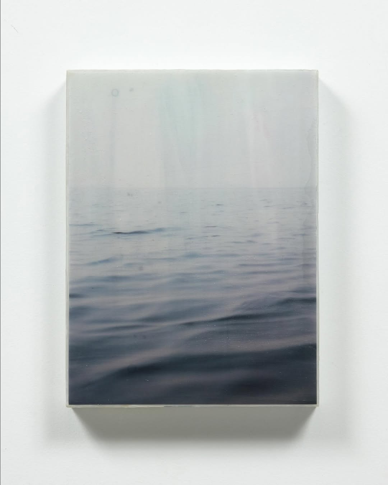
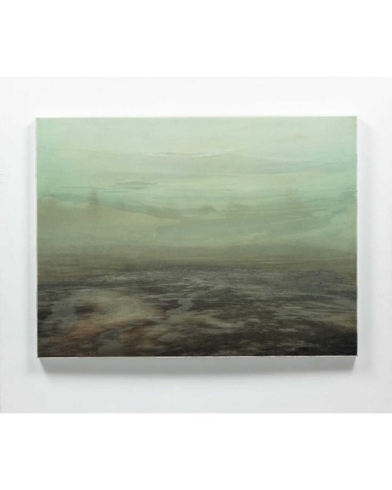
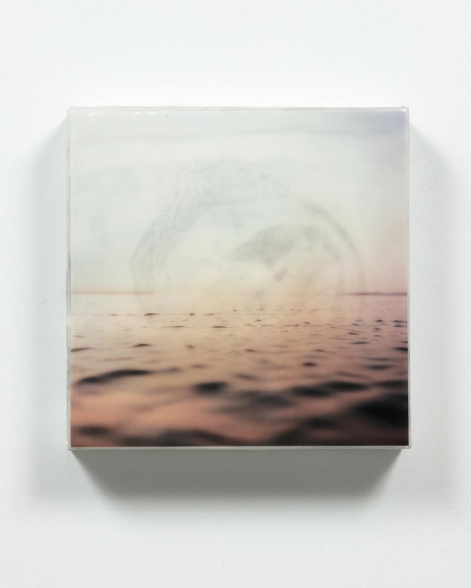
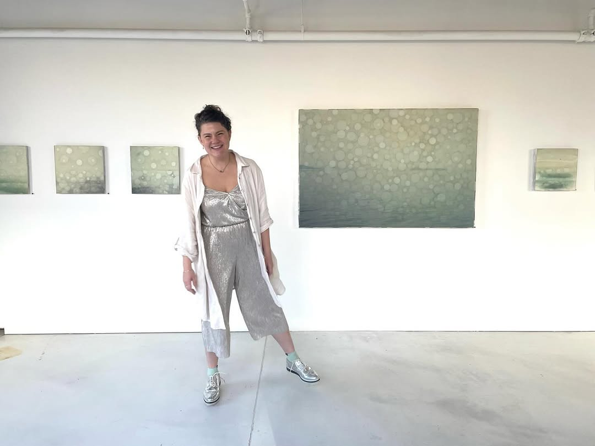
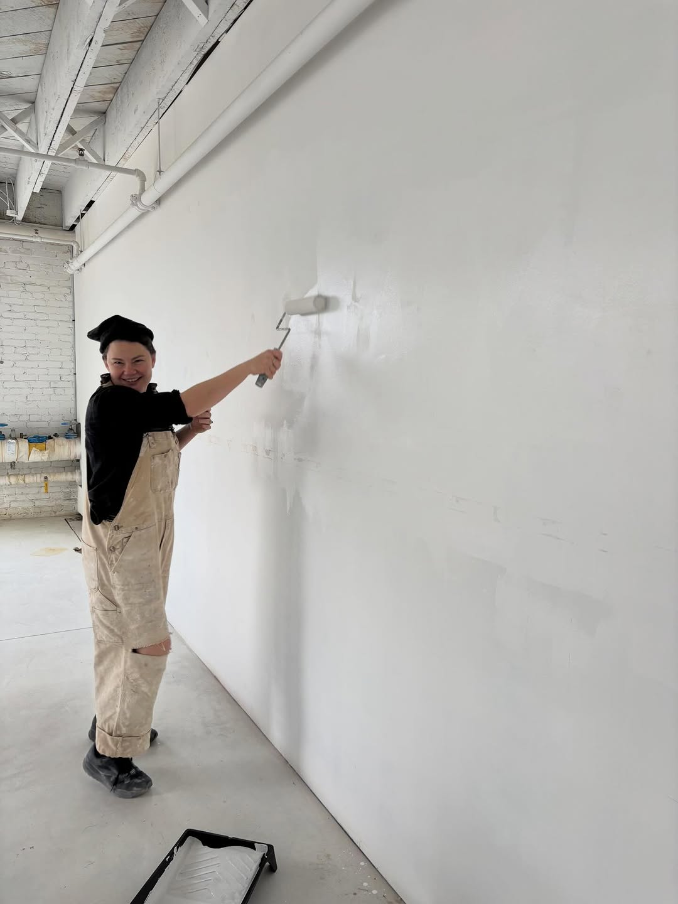

The moment just before something becomes forever.
Selected Works

Untitled (Marshland), mixed media on panel

Untitled (Afterlight), mixed media on panel
Artist Statement
My work is about not knowing whether it's dusk or the first glimpse of sunlight on a foggy morning. Where does the horizon line begin at these times of day? Does it fade into sky or ocean?
A horizon line holds things apart, and ideas can fall beneath it, then resurface.
I'm interested in the moment just before something becomes forever in my work.

About
Klee Larsen works with encaustic wax, resin, and photographic transfer on panel. The pieces start with photographs of water and land taken at the edges of the day, then get buried under translucent layers until the image is more memory than record.
She lives and works in Vancouver, BC.
Afterlight
Solo exhibition, Janaki Larsen Studio
1706 West 1st Ave, Vancouver
January 2026

Preparing for Afterlight, 2026
Contact